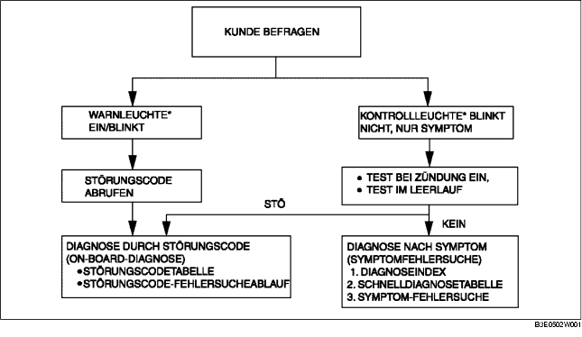

VORWORT [FN4A-EL]
B3E050219090W02
• Wenn der Kunde eine Störung des Fahrzeugs meldet, die Störungsanzeigeleuchte, AT-Warnleuchte und den PCM-Speicher auf Störungscodes (DTC) prüfen, dann die Störung gemäß des folgenden Flussdiagramms ermitteln.
-
- Falls ein Störungscode existiert, den zutreffenden Störungscode untersuchen. (Siehe STÖRUNGSCODETABELLE [FN4A-EL].)
-
- Wenn kein Störungscode vorliegt, die Störungscodeanzeigeleuchte und die AT-Warnleuchte nicht leuchten. Ursache entsprechend der Symptomfehlersuche ermitteln. (Siehe SYMPTOM-FEHLERSUCHE.)

*: Störungsanzeigeleuchte (MIL), AT-Warnleuchte